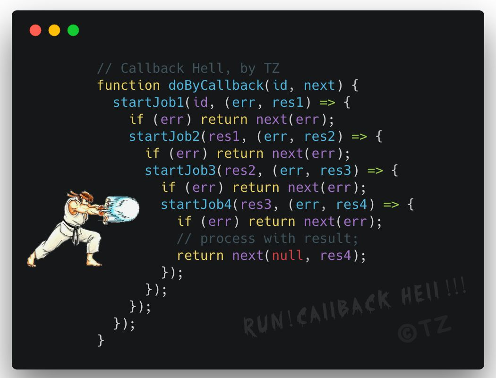

web 应用是由事件驱动（异步）的
web 应用是由事件驱动（异步）的
事件回调的本质是消息收发，处理我们未来可能得到的数据
web 应用是由事件驱动（异步）的
事件回调的本质是消息收发，处理我们未来可能得到的数据
回调地狱
如何处理？
能通过回调完成所有 Promise 的功能吗？如何实现？
如何处理？
添加 状态 —— 有时间特性的数据（开始时修改状态，完成时修改并检查状态）
如何处理？
结合 new Vue() + ref
谢谢观看